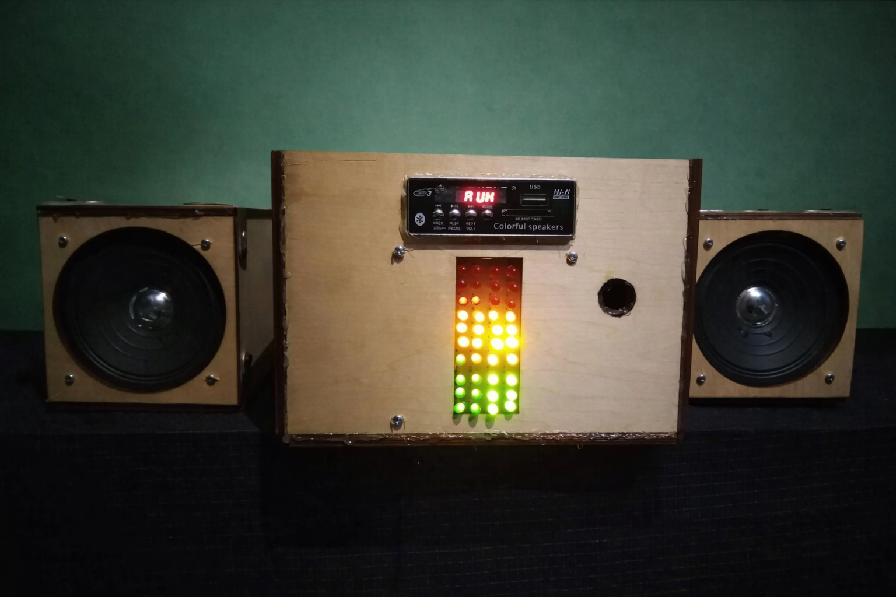

自己紹介 About Me
システムエンジニアを目指して学習している専門学校生です。 Webアプリ開発を中心に、HTML・CSS・JavaScriptを用いた ユーザー目線のシステム制作に取り組んでいます。 日本での就職を目標に、日本語力と技術力の両方を日々向上させています。
I am a vocational school student studying to become a system engineer. I mainly focus on web application development, creating user-oriented systems using HTML, CSS, and JavaScript. With the goal of working in Japan, I continuously work to improve both my Japanese language skills and technical abilities.
連絡先 Contact
ハン イー ソー
Han Yi Soe
メール：
hanyisoe9@gmail.com
 GitHub
GitHub
Email:
hanyisoe9@gmail.com
 GitHub
GitHub
将来的に目指すこと Future Goals
現在は、学校法人山口学園 ECCコンピュータ専門学校の システムエンジニアコースで学習しており、 将来はIT業界で活躍できる優秀なシステムエンジニアになることを目指しています。 また、日本の企業に就職するため、 日本語能力試験JLPT N1の取得も目標としています。
I am currently studying in the System Engineer Course at Yamaguchi Gakuen ECC Computer College. My goal is to become a highly skilled system engineer who can contribute to the IT industry in the future. In addition, in order to work for a Japanese company, I am aiming to obtain JLPT N1 certification.
やってみたいこと What I Want to Do
日本のIT分野で実践的な技術を身につけ、 将来は同僚から信頼されるシステムエンジニアとして活躍したいと考えています。 学校で学んだスキルを活かして、良い会社に就職することが目標です。 また、将来的には貯金をして、家族と一緒に世界中を旅行したいという夢もあります。
I aim to acquire practical skills in Japan’s IT field and, in the future, work as a system engineer who is trusted by colleagues. By making use of the skills I have learned at school, my goal is to secure a position at a good company. Additionally, I have a long-term dream of saving money and traveling around the world with my family.
プロジェクト紹介 Projects
毎日栄養たっぷりの一皿（Webアプリ）
HTML・CSS・JavaScriptを使用し、 毎日の食事内容を入力することで栄養バランスを確認できる Webアプリを制作しました。 食事ピラミッドを基に、摂取できている栄養グループと 不足しているグループを分かりやすく表示します。
入力操作をできるだけ簡単にし、 初めて使う人でも迷わず利用できるUIを意識しました。
URL：

Audio Stereo Amplifier
大学2年次のプロジェクトショーにて 「Audio Stereo Amplifier」をテーマとした作品で参加し、 3位を受賞しました。 Bluetooth対応のオーディオアンプを開発しました。
進捗管理と発表資料の作成を担当し、 状況を整理・共有することで チーム開発を円滑に進めました。
この経験を通して、 報告・連絡・相談の重要性を学びました。

正面デザイン
.png)
内部構造
Make Every Day A Complete Plate (Web App)
I developed a web application using HTML, CSS, and JavaScript that allows users to input their daily meals and check their nutritional balance.
I focused on simplifying the input process and designing a UI that even first-time users can use without confusion.
URL：
Audio Stereo Amplifier
In my second year, I participated in a university project showcase with a project titled “Audio Stereo Amplifier” and won third place.
I was responsible for progress management and presentation materials, helping the team solve problems efficiently.
Through this experience, I learned the importance of communication in team development.
Front Design
Internal Structure
学歴 Education
- 2017年3月：高校卒業
- 2017年12月：Technology (Yatanarpon Cyber City) 大学 電子工学部 在籍（2年間）
- 2021年：ミャンマーの政治的事情により中退
- 2023年9月：京都外国語大学にて1年半日本語を学習
- 在学中、成績および人物評価により奨学金を獲得（1名のみ）
- ECCコンピュータ専門学校 在学中
- March 2017: Graduated from high school
- December 2017: Enrolled in the Faculty of Electronic Engineering at Technology University (Yatanarpon Cyber City) (studied for two years)
- 2021: Withdrew from the university due to political circumstances in Myanmar
- September 2023: Studied Japanese for one and a half years at Kyoto University of Foreign Studies
- During enrollment, awarded a scholarship based on academic performance and personal evaluation (sole recipient)
- Currently enrolled at ECC Computer College
スキル Skills
- HTML / CSS / JavaScript
- 日本語
- 英語
- HTML / CSS / JavaScript
- Japanese
- English
長所 Strengths
一度決めたことは最後まで全力で取り組む粘り強さが私の強みです。 常に高い成績を維持することを意識し、 日本留学を実現するため日本語学習にも力を注ぎました。 また、三つ子の一人として育った経験から、 役割分担や協力の大切さを学び、 コミュニケーション力と協調性を身につけました。
My strength is perseverance—I commit fully to what I decide to do and see it through to the end. I consistently aimed to maintain high academic performance and devoted myself to studying Japanese in order to make studying in Japan a reality. In addition, growing up as one of triplets taught me the importance of sharing responsibilities and cooperating with others, helping me develop strong communication skills and a cooperative mindset.
学習への取り組み Approach to Learning
授業内容をそのまま終わらせず、 自分で調べて復習し、実際にコードを書くことで理解を深めています。 分からない点は積極的に質問し、 次の制作に活かすことを心がけています。
Rather than simply completing class assignments, I research topics on my own, review the material, and deepen my understanding by actually writing code. When I encounter something I do not understand, I actively ask questions and make an effort to apply what I learn to future projects.